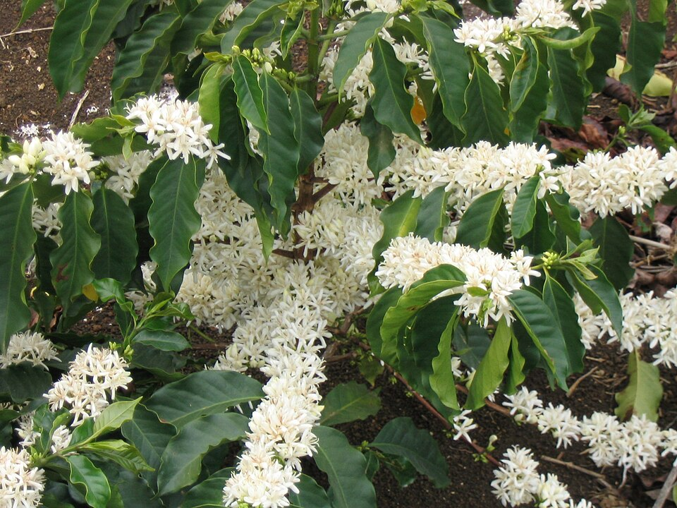
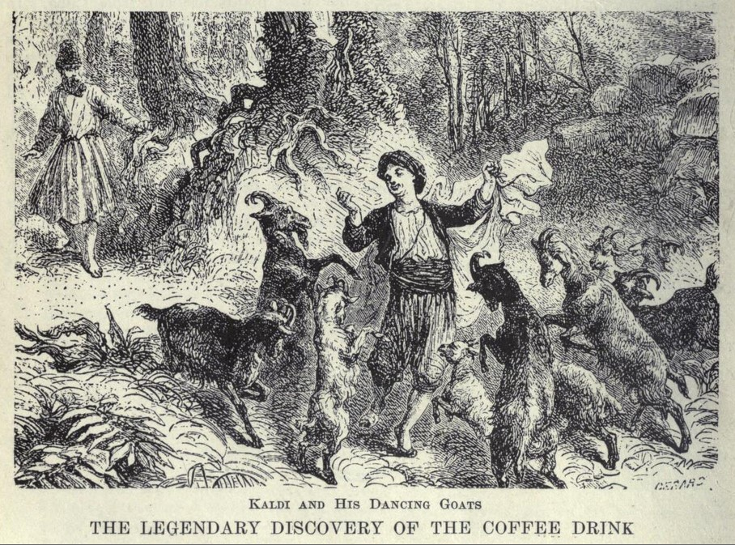
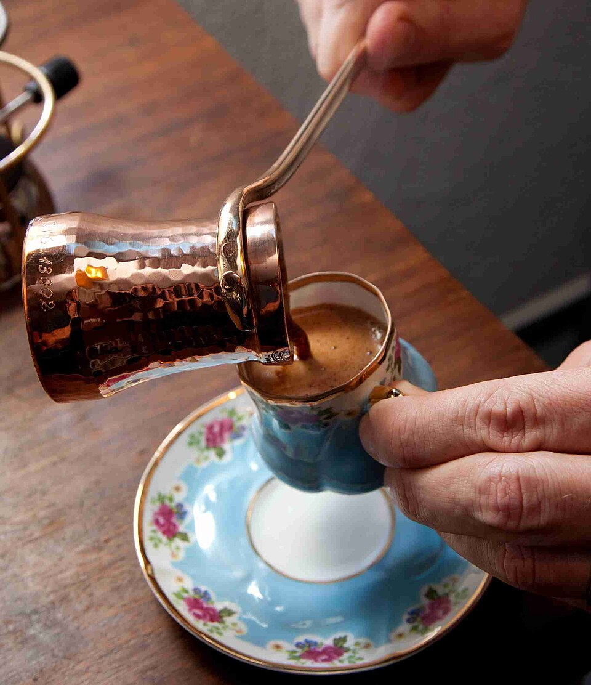

The Histry
From wild Ethiopian forests to the espresso machine: how a red berry became one of the world's most popular drinks.
Where coffee comes from

The coffee plant (Coffea arabica) is native to the highlands of Ethiopia, especially the forests of the Kaffa region. Ethiopia is coffee's botanical birthplace, but Yemen is where it first became the roasted, brewed drink we know today.
The legends

Legend, not history The stories below are folklore. None of them appear in any written record from the time they describe.
- LegendKaldi the goatherd: a 9th-century Ethiopian goatherd noticed his goats became lively after eating red berries, and shared them with monks. The story first appears in writing centuries later, in a 1671 book by Antoine Faustus Nairon.
- LegendAl-Shadhili: a Sufi mystic who is said to have noticed unusually energetic birds feeding on the berries.
- LegendSheikh Omar of Mocha: exiled to the desert, he is said to have survived by boiling the berries into a drink.
What the records show
- The first credible written evidence of coffee drinking comes from Sufi monasteries in Yemen in the mid-15th century. The 16th-century writer al-Jaziri names Jamal al-Din al-Dhabhani, a Sufi scholar and mufti of Aden (died c. 1470), as one of the first to drink it.
- Historians think the trade between Ethiopia and Yemen may have started up to a century before it was written down. The Yemeni port of Mocha became the centre of the world coffee trade.
- Some accounts suggest coffee could have reached Yemen as early as the 6th century, during the Aksumite (Ethiopian) rule of Yemen. This is speculation, and there is no direct evidence for it.
Where coffee grows today
Coffee is now grown across the "coffee belt" between the tropics. In 2020 the five largest producers were:
Brazil
Vietnam
Colombia
Indonesia
Ethiopia, still a top producer in coffee's homeland
Evidence: [4]
Before the cup: early uses
- Eaten for energy: in the Ethiopian forests, people chewed the cherries and leaves. Crushed cherries were mixed with animal fat into portable energy balls for long journeys. Similar practices are reported in Uganda.
- Fermented fruit: a wine-like drink was made from the fermented pulp of the coffee cherry. Some researchers think alcoholic preparations came before non-alcoholic ones.
- Qishr: in Yemen, dried coffee cherry husks were brewed into a light, tea-like drink, which is still made today.
- Medicine: some of the earliest written references, credited to the physicians Rhazes (9th–10th century) and Avicenna (c. 1000), describe a plant called bunchum as a remedy.
- Religious use: Sufi communities in Yemen drank coffee to stay awake during night-long prayers.
Debated Historians disagree on whether Rhazes' and Avicenna's "bunchum" was really coffee, so treat these as possible early references.
Evidence: [2] [6] [22] [23] [25]
From green to roasted

The earliest coffee was brewed from green, unroasted beans. The oldest archaeological evidence of roasted coffee beans comes from Julfar, in present-day Ras al-Khaimah, UAE, dating to around the 12th–13th century. The darker roasting style developed in the Ottoman world in the 15th–16th centuries, alongside the cezve, the small long-handled pot still used for Turkish coffee.
How coffee became a drink
- 15th century Roasted, brewed coffee spreads through Yemen's Sufi circles By the 1540s it was being grown as a cash crop in the Yemeni highlands.
- c. 1554–55 The first coffeehouses open in Istanbul, in the Tahtakale district Dates vary slightly between sources.
- 1600s Coffee reaches Europe through Venetian trade Pope Clement VIII is said to have approved it as a "Christian beverage". This is an anecdote with no firm record.
- 1645 Venice: one of the first coffeehouses in Europe outside the Ottoman Empire Sources give dates from 1629 to 1647.
- 1650–51 Oxford's first coffeehouse opens The University of Oxford's history faculty gives 1651; other sources say 1650.
- 1652 London: Pasqua Rosée opens the city's first coffeehouse Rosée came from Smyrna (modern İzmir) in the Ottoman Empire. His coffeehouse burned down in the Great Fire of 1666 and was rebuilt as the Jamaica Coffee House. Within decades, London had hundreds of coffeehouses.
- 1686 Paris: Café Procope opens Coffee had been sold in Paris from the 1670s, and Procope is the city's oldest surviving café.
- 1773 The Boston Tea Party Often cited as a turning point that pushed American colonists from tea towards coffee.
- 1884 Angelo Moriondo of Turin patents a steam coffee machine A bulk brewer rather than a true espresso machine, but its direct forerunner.
- 1901–1906 The espresso machine is born Luigi Bezzera improves the design (c. 1901), Desiderio Pavoni buys his patents (1903) and markets the machine, and "caffè espresso" is shown at the 1906 Milan Fair.
Evidence: [7] [8] [9] [10] [26] [28] [30]
Penny universities
English coffeehouses were nicknamed "penny universities": for the price of a cup, anyone could join conversations on politics, science and business. Several early European coffeehouses were founded by immigrants from the Ottoman world.
Where the word comes from
The words coffee and café come from the Arabic qahwa, through the Turkish kahve and the Italian caffè.
Evidence: [11]
How coffee went global
For a long time Yemen controlled the coffee trade. Coffee was grown outside Arabia only because people took seeds and seedlings to new places, by smuggling or by trade:
- c. 1600–1670 India Tradition says the Sufi pilgrim Baba Budan smuggled seven coffee seeds out of Yemen and planted them in the Chikmagalur hills of Karnataka. The Coffee Board of India dates this to around 1600; other accounts say 1670. The "seven beans" detail is part of the legend.
- 1690s Java, Indonesia The Dutch shipped coffee plants to their colony on Java in 1696, and by 1699 the plantations had taken hold, which is why "java" became a nickname for coffee.
- 1720s The Caribbean French naval officer Gabriel de Clieu carried a coffee seedling to Martinique, usually dated to 1723.
- 1727 Brazil Francisco de Melo Palheta brought coffee from French Guiana to Brazil, which is today the world's largest producer.